🎯 المطلوب – رياضيات الأعمال
نقط رسالة الأدمن (5/11). كل نقطة فيها أزرار: الشرح خطوة خطوة (صورة ← تبسيط ← فيديو) والمادة والملفات. علّم ✔ لما تخلص.
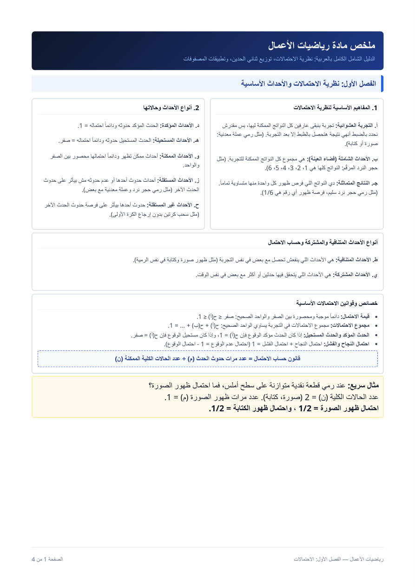
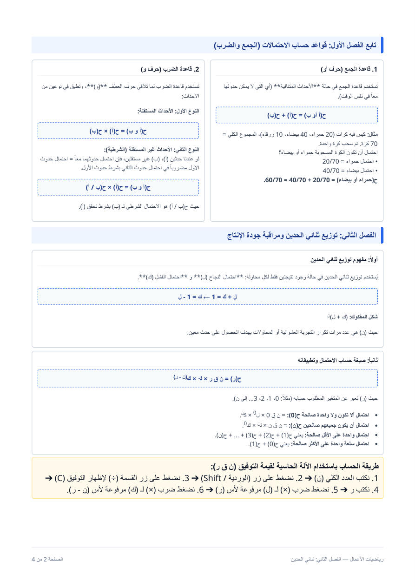
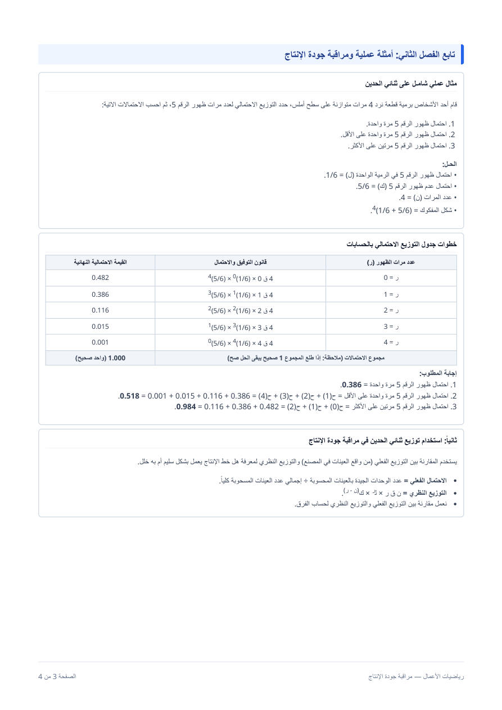
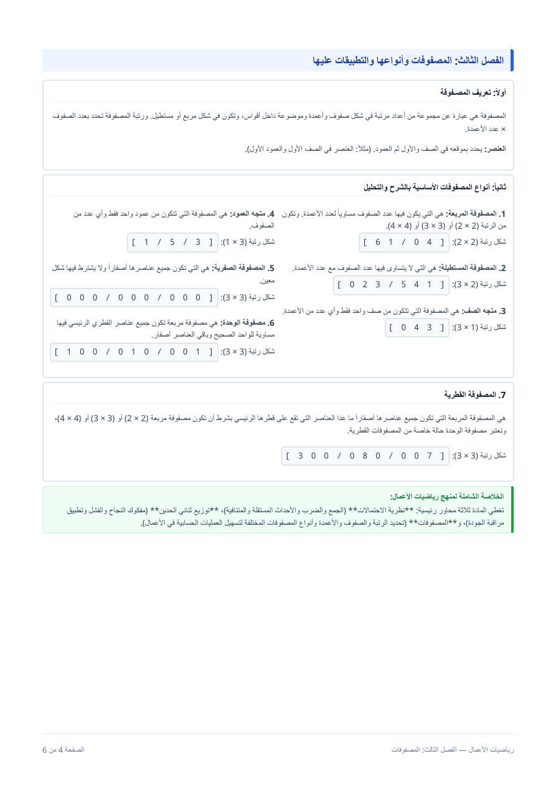
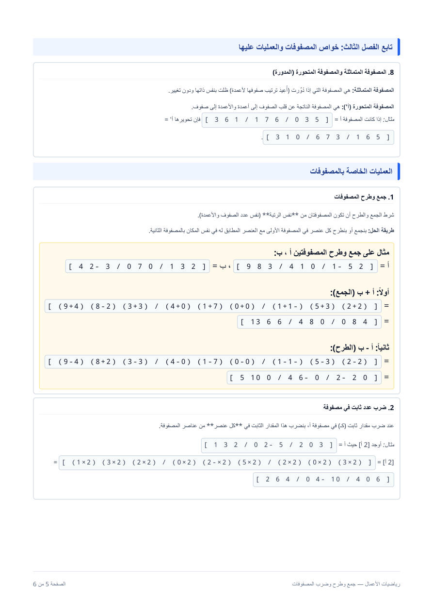
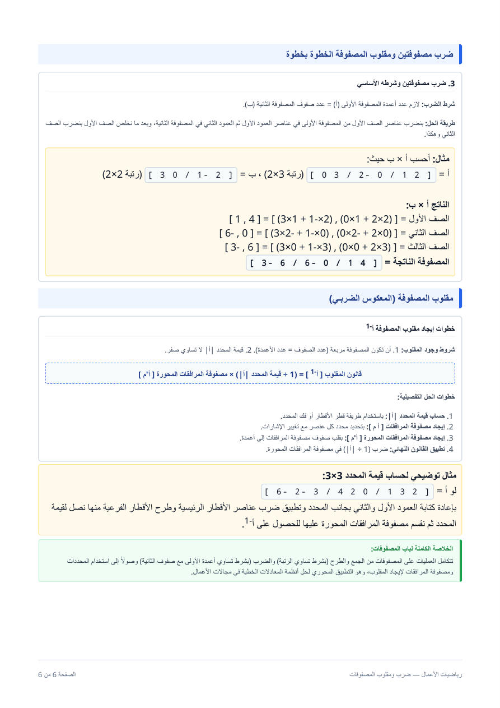


تخيل معايا: معاك عملة معدنية. هترميها. ممكن تقع صورة وممكن تقع كتابة. مش عارف هتقع على إيه. الاحتمال هو رقم بيقولك فرصة إن حاجة معينة تحصل قد إيه.
فكرة بسيطة جدًا: افرض عندك صندوق فيه 10 كور: 3 حمرا و7 زرقا. وهتغمض عينك وتسحب كورة واحدة. إيه فرصة إنها تطلع حمرا؟
- كله 10 كور (دي كل الحالات اللي ممكن تطلع).
- منهم 3 حمرا (دي الحالات اللي أنا بسأل عنها).
- يبقى الفرصة = 3 من 10، يعني 3 ÷ 10 = 0.3.
ده كل القانون! اكتبه كده:
بنكتبه في الكتاب كده: ح(أ) = عدد الحالات المناسبة ÷ عدد الحالات الكلية. (ح = احتمال، أ = اللي بسأل عنه، المناسبة = اللي بسأل عنها، الكلية = كلهم.)
مثال تاني: زهرة نرد (ليها 6 أوجه: 1،2،3،4،5،⑥. احتمال يطلع رقم زوجي؟ كل الحالات = 6. الزوجي: 2 و4 و6 يعني 3.
يعني إيه 1/2؟ يعني نص النص، زي العملة: نص فرصة.

دي كل المصطلحات اللي في ملخص الأدمن لباب الاحتمالات، كل واحد بمعناه ومثاله:
أولًا: عن التجربة
- التجربة العشوائية: عمل نعرف كل نواتجه الممكنة بس مش عارفين أنهي واحدة هتحصل بالظبط. مثال: رمي عملة (صورة أو كتابة).
- فضاء العينة (الأحداث الشاملة): مجموع كل النواتج الممكنة للتجربة. مثال: رمي حجر النرد ← 1 و2 و3 و4 و5 و6.
- النتائج المتماثلة: نواتج فرصة ظهور كل واحدة فيها متساوية تمامًا. مثال: نرد سليم، فرصة أي رقم = 1/6.
ثانيًا: أنواع الأحداث حسب احتمالها
- الحدث المؤكد: حدوثه مؤكد، احتماله دايمًا = 1.
- الحدث المستحيل: حدوثه مستحيل، احتماله دايمًا = صفر.
- الحدث الممكن: ممكن يحصل وممكن لأ، احتماله محصور بين الصفر والواحد.
ثالثًا: أنواع الأحداث حسب علاقتها ببعض
- المستقلة: حدوث أحدها أو عدم حدوثه مش بيأثر على حدوث التاني. مثال: رمي نرد وعملة معدنية مع بعض.
- غير المستقلة: حدوث أحدها بيأثر على فرصة حدوث التاني. مثال: سحب كرتين من غير إرجاع الكرة الأولى.
- المتنافية: ما ينفعش يحصلوا مع بعض في نفس التجربة. مثال: ظهور صورة وكتابة في نفس الرمية.
- المشتركة: ممكن يتحقق حدثين أو أكتر في نفس الوقت مع بعض.
القانون الأساسي (بصيغة ملخص الأدمن):
الباب مترتب كده: مصطلحات ← قانون الاحتمال والخواص ← العكس ← الجمع (أو) ← الضرب (و) ← على الأقل ← مثال امتحان.
دي الخواص اللي في ملاحظاتك، بس مش هتحفظها، هتفهمها بالمنطق. ارجع للصندوق (10 كور: 3 حمرا و7 زرقا):
① الاحتمال مش ممكن يبقى أكبر من 1 ولا أقل من صفر.
لأن الحالات اللي بسأل عنها دايمًا أقل من أو تساوي كل الحالات. مش ممكن يبقى عندي 12 كورة حمرا في صندوق فيه 10 كور! يعني البسط (فوق) أصغر من المقام (تحت) ودايمًا الناتج بين 0 و1.
② الحدث المؤكد احتماله 1. يعني إنت متأكد 100% إنه هيحصل.
مثال: بسحب كورة من صندوق كله حمرا: احتمال حمرا = 10 ÷ 10 = 1. (كل الحالات مناسبة.)
③ الحدث المستحيل احتماله صفر. يعني مش هيحصل خالص.
مثال: بسحب كورة خضرا من صندوق مفيهوش أخضر: 0 ÷ 10 = صفر.
④ احتمال الحصول + احتمال عدم الحصول = 1.
في الصندوق: احتمال حمرا = 0.3، فاحتمال مش حمرا (يعني زرقا) = 0.7. وكده 0.3 + 0.7 = 1. ده منطقي: الكورة يا حمرا يا مش حمرا، مفيش تالت، فالاثنين مع بعض هما كل الفرص (100%).
⑤ مجموع احتمالات كل النتايج الممكنة = 1. نفس الفكرة: لو بتقسم الفرص على كل النتايج الممكنة، المجموع لازم يكمل الفرص كلها = 1. (مثال الزهرة: 1/6 لكل وجه، ×6 = 1.)
الخلاصة بكلمة: الصفر معناه «مستحيل»، والواحد معناه «أكيد»، وأي حاجة بينهم فرصة.
📌 لو الدكتور كتبه بـ (م ÷ ن): م = الحالات المناسبة (اللي بسأل عنها)، ون = الحالات الكلية. نفس الكلام.

من الخاصية الرابعة طلعت لنا قاعدة سهلة تنقذك كتير:
مثال: احتمال تطلع 6 على الزهرة = 1/6. فاحتمال مش تطلع 6 = 1 − 1/6 = 5/6.
(نفس الكلام لو عددت: الوجه 1 و2 و3 و4 و5 = 5 حالات من 6.)
ليه مهمة؟ لأن أوقات يبقى أسهل تحسب العكس وتطرحه من 1 بدل ما تحسب المطلوب نفسه، وهتشوف ده في «على الأقل».

الحالة الأولى (الأسهل): الاتنين مش ممكن يحصلوا مع بعض. اسمهم أحداث متنافية (يعني بينفوا بعض: لو واحد حصل التاني مش هيحصل).
مثال: صندوق فيه 20 كرة حمرا و40 بيضا و10 زرقا (المجموع 70.. سحبت كورة. احتمال تكون حمرا أو بيضا؟
الكورة الواحدة مش ممكن تبقى حمرا وبيضا مع بعض. فنجمع الاحتمالين:
ليه نجمع؟ لأننا ببساطة بنعد كل الكور اللي تنفع (20 + 40 = 60) من أصل 70.
الحالة التانية: ممكن يحصلوا مع بعض. زي رقم زوجي أو رقم أكبر من 4 على زهرة. الرقم 6 بيحقق الاتنين. لو جمعنا عادي هنعد الـ6 مرتين، فنطرحه مرة:
زوجي = 3/6، أكبر من 4 (5 و6) = 2/6، المشترك (6 بس) = 1/6:
اسأل نفسك دايمًا: هل ممكن الاتنين يحصلوا مع بعض؟ لأ ← اجمع بس. أيوه ← اجمع واطرح المشترك.


الفكرة: «و» معناها إن الحدثين يحصلوا الاتنين، واحد ورا التاني. زي إنك تسحب كورتين.
مثال: صندوق فيه 5 كور حمرا و3 زرقا (المجموع ⑧. هتسحب كورتين. احتمال الاتنين حمرا؟
الأول: السحب مع الرد (بترجع الكورة مكانها بعد ما تسحبها). يعني السحبة التانية ظروفها زي الأولى بالظبط (برضه 5 حمرا من ⑧:
التاني: السحب من غير رد (الكورة الأولى مرجعتش). دلوقتي الصندوق اتغير: بقى فيه 7 كور بس، منهم 4 حمرا:
ليه نضرب؟ احتمال الأولى × احتمال التانية بعد ما الأولى حصلت. زي ما تقول: «خد نص (فرصة الأولى) من النص (فرصة التانية)».
كلمة غريبة اسمها «مستقل وغير مستقل»: مع الرد = مستقل (الأولى ما أثرتش على التانية). من غير رد = غير مستقل (الأولى غيّرت الصندوق). ولما بنقول ح(ب/أ) يعني احتمال ب بعد ما أ حصل (زي 4/7 اللي فوق).
القوانين كاملة (من ملخص الأدمن):


المشكلة: «سحبت كورتين من الصندوق (5 حمرا و3 زرقا). احتمال تكون واحدة على الأقل زرقا». يعني ممكن واحدة زرقا، وممكن الاتنين. كتير حالات!
الحيلة: بدل ما نحسب الحالات دي كلها، نحسب العكس: ولا واحدة زرقا (يعني الاتنين حمرا)، وبعدين نطرحه من 1. (لأننا اتعلمنا إن «هيحصل» = 1 − «مش هيحصل».)
مع الرد:
من غير رد:
خطوات أي مسألة سحب: هل مع رد ولا من غير؟ ← «و» نضرب و«أو» نجمع ← «على الأقل» نحسب العكس ونطرحه من 1.
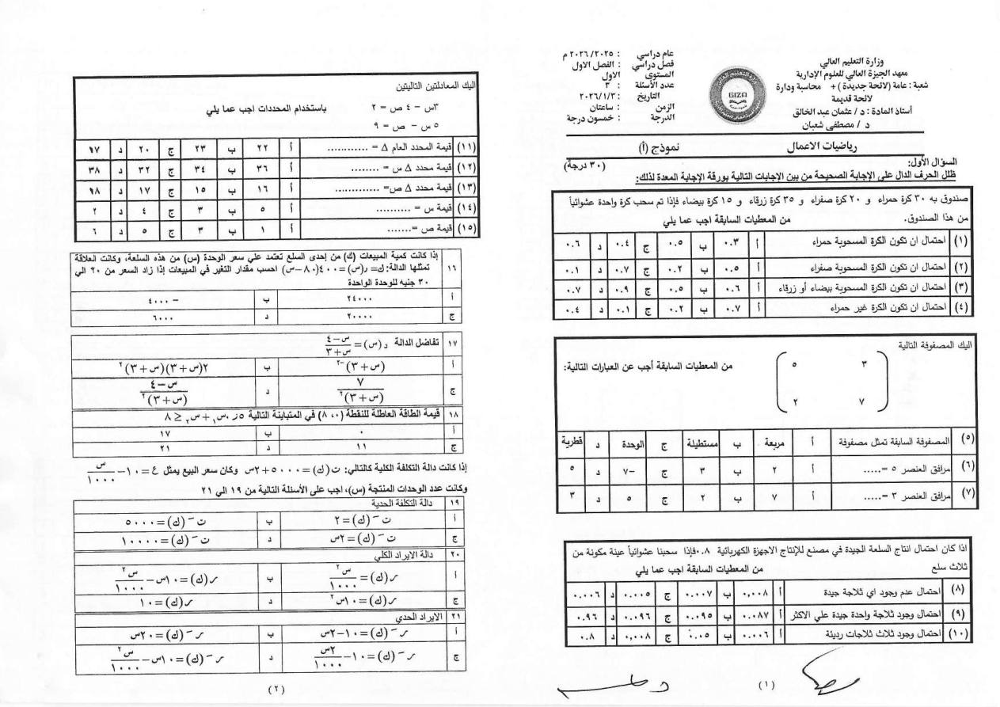
من امتحان السنة اللي فاتت: صندوق فيه 30 كرة حمراء و20 صفراء و15 زرقاء و35 بيضاء. سحبنا كرة واحدة.
أول حاجة: كل الحالات = 30 + 20 + 15 + 35 = 100.
لاحظ: «بيضاء أو زرقاء» ← جمعنا العدد. «غير حمراء» ← عكس الحدث.
🖼 كل صور الموضوع ده (27) – لو عايز تشوف الدفتر كله
اسحب الصور يمين وشمال، واضغط على أي صورة لتكبيرها والتقليب بينها


القانون الأساسي: ح(أ) = عدد الحالات المناسبة ÷ عدد الحالات الكلية
خواص (حفظ):
- الاحتمال كسر حقيقي موجب (البسط أقل من المقام): 0 ≤ ح ≤ 1
- الحدث المؤكد = 1 (100%) ، الحدث المستحيل = 0
- احتمال الحدث + احتمال عدم حدوثه = 1 ← ح(أ) + ح(أ̄) = 1
- مجموع احتمالات كل نواتج التجربة = 1
(مثال الدفتر: نجاح 80% ← فشل 20%)
قانون الجمع (أو):
| الحالة | القانون |
|---|---|
| أحداث متنافية (لا تحدث معًا) | ح(أ أو ب) = ح(أ) + ح(ب) |
| أحداث غير متنافية (مشتركة جزئيًا) | ح(أ أو ب) = ح(أ) + ح(ب) − ح(أ و ب) |
قانون الضرب (و):
| الحالة | القانون |
|---|---|
| مستقلة (سحب بإرجاع) | ح(أ و ب) = ح(أ) × ح(ب) |
| غير مستقلة (سحب بدون إرجاع) | ح(أ و ب) = ح(أ) × ح(ب/أ) |
| الشرطي | ح(ب/أ) = ح(أ و ب) ÷ ح(أ) |
مثال محلول (من الدفتر): صندوق فيه 15 كرة حمراء، 10 زرقاء، 7 خضراء (المجموع 32.
- بإرجاع، حمراء ثم زرقاء = 15/32 × 10/32 = 150/1024 ≈ 14.6%
- بدون إرجاع، حمراوين = 15/32 × 14/31 = 210/992 ≈ 21.2%
- بدون إرجاع، زرقاوين = 10/32 × 9/31 = 90/992 ≈ 9.1%
- ملحوظة: في "بدون إرجاع" المقام في السحبة التانية بينقص 1، والبسط كمان ينقص 1 لو نفس اللون.
من رسالة الأدمن: "ركز على قانون الاحتمال الفعلي، والتوزيع بين الاحتمال الفعلي والنظري". الشرح هنا بالقاعدة العامة (من المعرفة العامة، مش من دفتر المحاضرة)، فطابقه مع شيت الدكتور.
- الاحتمال النظري = الحالات المناسبة ÷ الحالات الكلية (بنحسبه بالعقل قبل التجربة). مثال: العملة، احتمال صورة = 1/2.
- الاحتمال الفعلي (التجريبي) = عدد مرات حدوث الحدث فعلًا ÷ عدد مرات التجربة. مثال: رمينا العملة 100 مرة وطلعت صورة 46 مرة ⟵ الفعلي = 46/100 = 0.46.
- العلاقة بينهم: كل ما زادت عدد المحاولات، الاحتمال الفعلي بيقرب من النظري (قانون الأعداد الكبيرة). في عدد محاولات قليل ممكن يبقوا مختلفين.
- توزيع الاحتمال (الفعلي/النظري): نكتب جدول بقيم الحدث واحتمال كل قيمة، ومجموع الاحتمالات = 1.
"سحب واحدة على الأقل" (مع الرد أو بدون رد):
- القاعدة السريعة: ح(واحدة على الأقل) = 1 − ح(ولا واحدة).
- مع الرد: ح(ولا واحدة) = (احتمال عدم المطلوب)^عدد السحبات. مثال: صندوق فيه 4 حمراء من 10، سحبنا مرتين بإرجاع: ح(ولا حمراء) = 6/10 × 6/10 = 0.36 ⟵ ح(حمراء على الأقل) = 1 − 0.36 = 0.64.
- بدون رد: المقام بينقص في السحبة التانية. نفس المثال بدون إرجاع: ح(ولا حمراء) = 6/10 × 5/9 = 1/3 ⟵ ح(على الأقل واحدة) = 1 − 1/3 = 2/3.
- صندوق 6 حمراء و4 بيضاء، سحب كرتين بإرجاع: احتمال حمراء ثم بيضاء؟
- نفس الصندوق بدون إرجاع: احتمال حمراوين؟
- ح(أ)=0.5، ح(ب)=0.4، ح(أ و ب)=0.2: احسب ح(أ أو ب).
- رمي عملة 4 مرات: احتمال صورتين بالضبط؟
- احسب 3−125.
- احسب 2011320−14.
- حل بكرامر: 3x + 2y = 12 ، x + y = 5.
- A = 1234، B = 0110: احسب A·B و B·A (هل متساويين؟).
- أوجد معكوس 4332.
الإجابات:
1) 6/10 × 4/10 = 0.24
2) 6/10 × 5/9 = 30/90 = 1/3
3) 0.5 + 0.4 − 0.2 = 0.7
4) 6 × (1/2)⁴ = 6/16 = 0.375
5) 15 + 2 = 17
6) 2(12+2) − 0 + 1(−1−0) = 28 − 1 = 27
7) Δ = 3−2 = 1 ، Δx = 12−10 = 2 ، Δy = 15−12 = 3 ← x = 2 ، y = 3
8) A·B = 2143 ، B·A = 3412 ← مش متساويين
9) Δ = 8−9 = −1 ← المعكوس = −1·2−3−34 = −233−4

المشكلة: عندك 3 أصحاب (أحمد ومحمد وعلي)، وعايز تختار اتنين منهم تروح معاهم. بكام طريقة تقدر تختار؟
اكتبهم: (أحمد ومحمد) أو (أحمد وعلي) أو (محمد وعلي) = 3 طرق. ده بالظبط معنى 3 ق 2 (من 3 اختار ②.
الرمز: ن ق ر = «بكام طريقة أختار ر حاجة من ن حاجة، والترتيب مش فارق».
إزاي نحسبها من غير ما نعد؟ بالقانون ده (علامة ! معناها «مضروب»، يعني 4! = 4×3×2×1 = 24):
مثال تاني: 5 أصحاب، اختار 2:
الآلة الحاسبة بتعملها: اكتب 5 ← اضغط Shift ← اضغط ÷ (هتظهر C) ← اكتب 2 ← يساوي.
حاجتين سهلين: ن ق 0 = 1 (بكام طريقة أختار ولا حاجة؟ طريقة واحدة)، و ن ق ن = 1 (أختار الكل: طريقة واحدة).
تخيل: بترمي عملة 3 مرات. عايز احتمال إنها تقع صورة مرتين بالظبط.
الأول نفهم الفكرة بالأرقام (من غير قانون):
- كل رمية: احتمال صورة = 1/2 (اسمه نجاح)، واحتمال كتابة = 1/2 (اسمه فشل).
- الترتيبات اللي فيها صورتين: صورة-صورة-كتابة أو صورة-كتابة-صورة أو كتابة-صورة-صورة. دول 3 ترتيبات.
- احتمال كل ترتيب = 1/2 × 1/2 × 1/2 = 1/8.
- يبقى الجواب = 3 ترتيبات × 1/8 = 3/8.
لاحظ: عدد الترتيبات (3) = 3 ق 2 اللي اتعلمناها فوق!
ده هو القانون كله، بس مكتوب بحروف:
- ن = عدد المحاولات (رمي العملة 3 مرات ← ن = ③.
- ر = عدد مرات النجاح اللي عايزها (صورتين ← ر = ②.
- ل = احتمال النجاح في المرة الواحدة (1/2).
- ك = احتمال الفشل (1/2). ك = 1 − ل دايمًا.

نستخدمه لما كل محاولة ليها نتيجتين بس: نجاح أو فشل (قطعة سليمة أو معيبة، الرقم 5 ظهر أو ما ظهرش)، وكل المحاولات متشابهة.
بالكلام: احتمال ر نجاحات = (عدد الترتيبات) × (احتمال النجاح مضروب في نفسه ر مرة) × (احتمال الفشل مضروب في نفسه الباقي مرة).
جرب على مثال العملة: ن = 3 ، ر = 2 ، ل = 1/2 ، ك = 1/2:
نفس الجواب اللي طلعناه بالترتيبات.
حالتين خاصتين مفيدتين:
خطوات أي مسألة: أولًا حدد ن (عدد المحاولات). ثانيًا حدد ر (المطلوب). ثالثًا حدد ل وك. رابعًا ركّب في القانون.

المسألة: قطعة نرد اترمت 4 مرات. ما احتمال ظهور الرقم 5: (أ) مرة واحدة؟ (ب) على الأقل مرة؟ (ج) على الأكثر مرتين؟
خطوة 1: نحدد الرموز.
- المحاولات: رمينا 4 مرات ← ن = 4.
- النجاح = ظهور الرقم 5: احتماله ل = 1/6.
- الفشل = ظهور أي رقم تاني: ك = 5/6.
خطوة 2: نحسب كل حالة (ر = عدد مرات ظهور ⑤:
اتأكد: لو جمعتهم كلهم يطلع 1. ده معناه إن حلك صح.
خطوة 3: نجاوب:
- (أ) مرة واحدة = ح(1) = 0.386
- (ب) على الأقل مرة = كل الحالات ما عدا «ولا مرة»: ح(1)+ح(2)+ح(3)+ح(4) = 0.518، أو أسهل: 1 − ح(0) = 1 − 0.482 = 0.518.
- (ج) على الأكثر مرتين = ح(0)+ح(1)+ح(2) = 0.984
فرق الكلمات: «على الأقل» = ده أو أكتر. «على الأكثر» = ده أو أقل.

من امتحان السنة اللي فاتت: احتمال إن السلعة تطلع جيدة في المصنع = 0.8. سحبنا عينة من 3 سلع.
- كل سلعة إما جيدة (نجاح) أو رديئة (فشل).
- ن = 3 ، ل = 0.8 (جيدة) ، ك = 0.2 (رديئة).
الأسئلة:
- ولا سلعة جيدة (يعني الثلاثة رديئة) = ك^3 = 0.2×0.2×0.2 = 0.008
- الثلاثة جيدة = ل^3 = 0.8×0.8×0.8 = 0.512
- سلعة واحدة جيدة على الأكتر = ح(0) + ح(1).
الحيلة: حدد ن ول وك الأول، وبعدها ركّب في القانون.
🖼 كل صور الموضوع ده (9) – لو عايز تشوف الدفتر كله
اسحب الصور يمين وشمال، واضغط على أي صورة لتكبيرها والتقليب بينها


- تجربة بيها نتيجتين (نجاح/فشل)، تتكرر n مرة، احتمال النجاح p ثابت، والفشل q = 1 − p
- القانون (احتمال r نجاح من n محاولة؛ n = عدد المحاولات، r = عدد النجاحات، p = احتمال النجاح):
- المتوسط والتباين:
مثال: رمي عملة 3 مرات، احتمال صورتين بالضبط = 3 × (1/2)² × (1/2) = 3/8
تخيل: بترمي عملة. بالعقل أنت عارف إن فرصة الصورة نص. ده النظري (من غير ما ترمي ولا مرة).
دلوقتي ترمي العملة 10 مرات فعلًا وتعد: طلعت صورة 6 مرات. يبقى الاحتمال الفعلي = 6 ÷ 10 = 0.6.
الفرق مش غلط: النظري «اللي المفروض يحصل»، والفعلي «اللي حصل فعلًا». ممكن يختلفوا، وكل ما كررت التجربة مرات أكتر بيقربوا من بعض.
ليه الاتنين بيتقارنوا في المصانع؟ المصنع بيعمل نفس الحاجة:
- النظري: باستخدام قانون ذات الحدين (اللي اتعلمناه) نحسب احتمال كل عدد من القطع السليمة.
- الفعلي: نسحب عينات فعلًا من الإنتاج ونعد القطع الجيدة (الفعلي = القطع الجيدة ÷ العينات المسحوبة).
- نقارن: لو الفرق صغير، خط الإنتاج سليم. لو كبير، فيه خلل.

المسألة (من الدفتر): طبيب نسبة نجاح عملياته 80%. احتمال إن العملية تفشل؟
نجاح + فشل = 1 (فيها أحدهما بس). يعني:
مثال المصنع: سحبنا 200 قطعة ولقينا 6 معيبة. الاحتمال الفعلي للعيب = 6 ÷ 200 = 0.03 (3%).
جدول التوزيع: لو طلب منك «توزيع»، اكتب كل نتيجة ممكنة واحتمالها في جدول، وتأكد إن مجموع الاحتمالات = 1.
🖼 كل صور الموضوع ده (27) – لو عايز تشوف الدفتر كله
اسحب الصور يمين وشمال، واضغط على أي صورة لتكبيرها والتقليب بينها
اتعرض في النقطة 1 روح له

الكلمة تخوف، بس الفكرة بسيطة: المحدد هو رقم واحد بنطلعه من جدول أرقام مربع، بالضرب والطرح بطريقة ثابتة.
جدول مربع يعني عدد صفوفه = عدد أعمدته. أصغر واحد 2×2 (صفين وعمودين):
| c d |
الطريقة (حاجتين بس): اضرب القطر a و d معًا، واطرح منه حاصل ضرب القطر التاني b و c:
مثال:
| 3 9 | المحدد = 4×9 − 5×3 = 36 − 15 = 21
خد بالك: الأول ضرب القطر النازل (4×9)، وبعدين تطرح الطالع (5×3). لو عكست هتجيب نفس الرقم بعلامة تانية!


الفكرة: محدد 3×3 بنحوله لتلات محددات 2×2 (اللي عرفناها). بنمسك الصف الأول، ولكل رقم فيه:
- نشطب صف الرقم وعموده (اللي بيفضل 2×2 صغير).
- نحسب محدد الـ2×2 ده.
- نضربه في الرقم نفسه، وبإشارة من جدول الإشارات.
جدول الإشارات (الأدمن قال لازم تعرفه):
− + −
+ − +
ليه كده؟ الإشارات بتتبادل (+ ثم − ثم +) زي رقعة الشطرنج، وبتبدأ بـ + من الركن اللي فوق على الشمال.
مثال:
| 0 1 4 |
| 5 6 0 |
- الرقم 1: نشطب صفه وعموده، فيفضل |1 4 ; 6 0| = 0 − 24 = −24. إشارته +: ← +1 × (−24) = −24
- الرقم 2: يفضل |0 4 ; 5 0| = 0 − 20 = −20. إشارته −: ← −2 × (−20) = +40
- الرقم 3: يفضل |0 1 ; 5 6| = 0 − 5 = −5. إشارته +: ← +3 × (−5) = −15
نصيحة توفر مجهود: مسك الصف أو العمود اللي فيه أصفار، لأن اللي ضربه في صفر بيختفي.


دي مش للحفظ، دي منطق. كل خاصية ليها سبب:
- صف (أو عمود) كله أصفار ← المحدد صفر. لأن كل حد في الحساب هيضرب في صفر.
- صفين متساويين (أو متناسبين) ← المحدد صفر. لأن الطرح هيلغي بعض بالظبط.
- نبدل صفين ببعض ← الإشارة تتعكس. (موجب بقى سالب والعكس.)
- نضرب صف في رقم ك ← المحدد كله يتضرب في ك.
- نقلب الصفوف لأعمدة (المتحورة) ← المحدد ما يتغيرش.
- ⭐ الخاصية اللي الدكتور قال هتيجي: لو ضربت صف في رقم وجمعته على صف تاني ← المحدد ما يتغيرش.
- محدد المصفوفة القطرية أو المثلثية (أصفار تحت أو فوق القطر) = ضرب أرقام القطر الرئيسي بس.
⚠ الأدمن قال «7 حالات»، وترتيبهم ممكن يختلف في كتاب الدكتور. فطابق بصور الخواص تحت.


المطلوب: معادلتين فيهم x و y، ونجيب قيمتهم.
مثال: 2x + 3y = 12 و x − y = 1
الفكرة: بنعمل 3 محددات (محدد = رقم):
- Δ (دلتا): محدد المعاملات (الأرقام اللي جنب x و y) من غير الأرقام اللي بعد =.
- Δx: نفس Δ بس نشيل عمود x ونحط مكانه عمود الأرقام اللي بعد =.
- Δy: نفس الفكرة بس لـ y.
ونطلع القيم بالقسمة:
اتأكد: 2×3 + 3×2 = 12 ✓ ، و 3 − 2 = 1 ✓
لو Δ طلعت صفر ← مفيش حل وحيد للمعادلتين.
3 معادلات في x و y و z: نفس الفكرة بالظبط، بس Δ محدد 3×3، وفي Δx وΔy وΔz بنبدّل العمود المناسب بعمود الأرقام اللي بعد =، والقيمة = Δ(المتغير) ÷ Δ.


المصفوفة = جدول أرقام في صفوف وأعمدة (زي جدول الدرجات). رتبتها = عدد الصفوف × عدد الأعمدة. (صفين وتلات أعمدة = رتبة 2×3.)
أنواعها (احفظ الفرق):
- مربعة: عدد الصفوف = عدد الأعمدة. مستطيلة: مش متساويين.
- متجه صف: صف واحد. متجه عمود: عمود واحد.
- صفرية: كل أرقامها أصفار. وحدة: 1 على القطر الرئيسي وباقيها أصفار.
- قطرية: أصفار ما عدا القطر الرئيسي. متماثلة: تساوي المتحورة بتاعتها.
- المتحورة (المدورة) أ': نقلب الصفوف لأعمدة.
الجمع والطرح: رقم مع الرقم اللي في نفس المكان، وشرطه نفس الرتبة:
[3 4] + [7 8] = [10 12]
الضرب في رقم: كل رقم في المصفوفة يتضرب في الرقم.
حل نظام معادلات بالمصفوفات: لو المعادلات اتكتبت أ × س = ب ← س = أ⁻¹ × ب (بنضرب في مقلوب أ، واتعلمنا المقلوب تحت).


الشرط الأول (سؤال صح وغلط): عدد أعمدة الأولى = عدد صفوف التانية. ولو الشرط مش متحقق الضرب مستحيل. والناتج رتبته (صفوف الأولى × أعمدة التانية). والضرب مش إبدالي (أ×ب مش بالضرورة ب×أ).
الطريقة: كل رقم في الناتج = صف من الأولى × عمود من التانية. اضرب الأرقام المتقابلة واجمع.
[3 4] × [7 8]
- الصف الأول × العمود الأول: 1×5 + 2×7 = 19
- الصف الأول × العمود التاني: 1×6 + 2×8 = 22
- الصف التاني × العمود الأول: 3×5 + 4×7 = 43
- الصف التاني × العمود التاني: 3×6 + 4×8 = 50
تقدر تتأكد: لو الأولى 2×2 والتانية 2×2 ← الناتج 2×2 ✓.

مرافق العنصر (جه في الامتحان «مرافق العنصر 5 = ...»): هو محدد الجدول الصغير اللي بيفضل بعد ما تشطب صف العنصر وعموده، وبإشارة من جدول الإشارات (+ − +).
مثال من الامتحان: المصفوفة
[ 2 7 ]
- مرافق العنصر 5: نشطب صفه وعموده ← يفضل 7. الإشارة + ← 7
- مرافق العنصر 3: نشطب صفه وعموده ← يفضل 2. الإشارة − (هو في الصف 1 والعمود ② ← −2
مقلوب المصفوفة (من ملخص الأدمن): شرطه إن المصفوفة مربعة والمحدد ≠ صفر.
خطوات: أولًا احسب المحدد |أ|. ثانيًا هات المرافقات (مرافق كل عنصر). ثالثًا اقلب صفوفها لأعمدة. رابعًا اضرب الكل في (1 ÷ |أ|).

🖼 كل صور الموضوع ده (50) – لو عايز تشوف الدفتر كله
اسحب الصور يمين وشمال، واضغط على أي صورة لتكبيرها والتقليب بينها


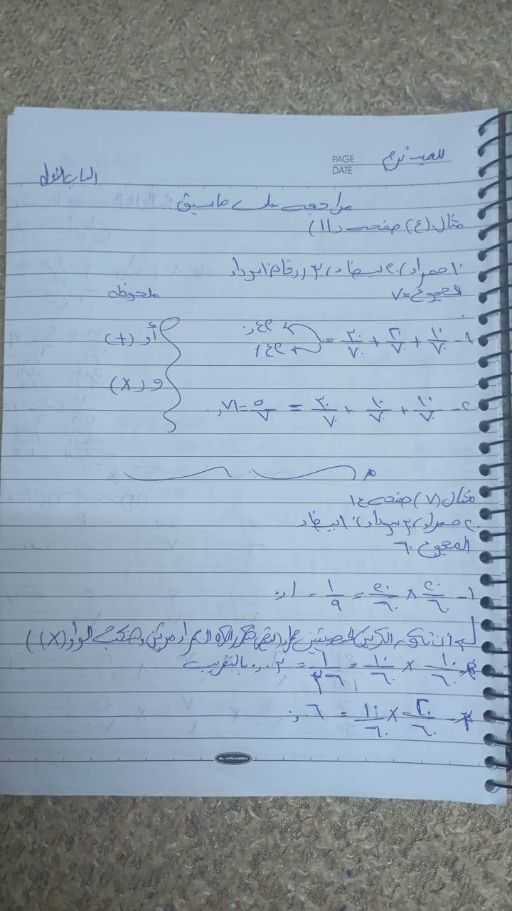
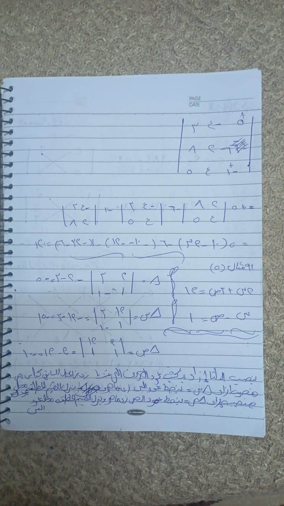
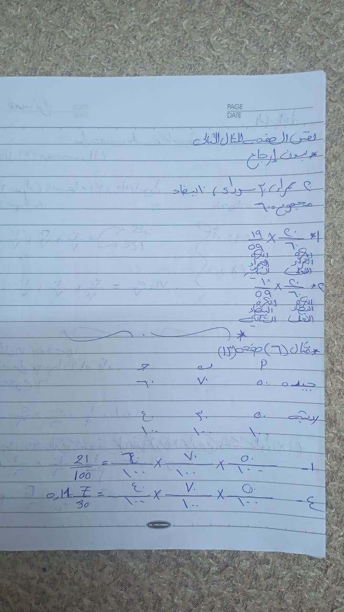
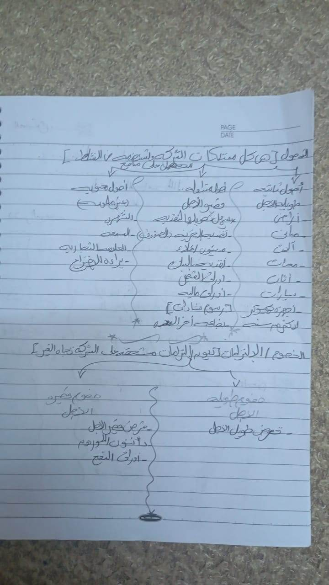
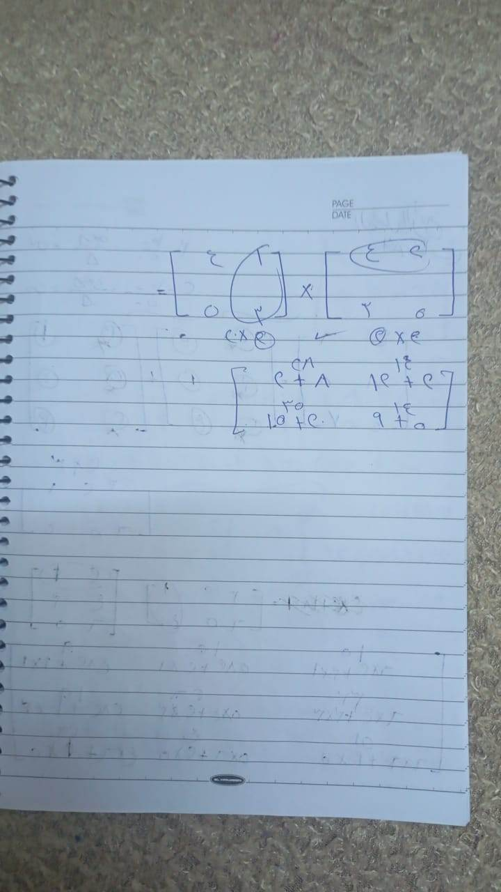
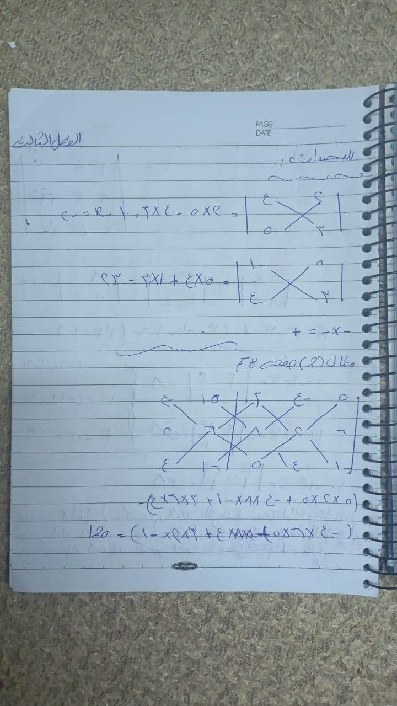
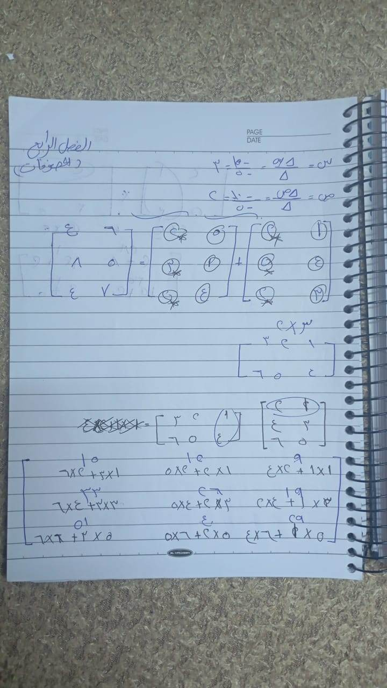
محدد 2×2: abcd = a·d − b·c (القطر الرئيسي ناقص القطر الثانوي)
مثال: 4539 = 36 − 15 = 21
3×3 (بالفك على الصف الأول، الإشارات + − +):
abcdefghi = a(e·i − f·h) − b(d·i − f·g) + c(d·h − e·g)
أو طريقة ساروس: أعد كتابة العمودين الأول والثاني على اليمين، اجمع حاصل الأقطار النازلة، واطرح حاصل الأقطار الطالعة.
مثال: 123014560 = 1(0−24) − 2(0−20) + 3(0−5) = −24 + 40 − 15 = 1
⭐ الخاصية الثامنة (قال الدكتور هتيجي صح/خطأ واختر – صورة 3/11 وص82.: لو ضربت عناصر صف (أو عمود) في مقدار ثابت وأضفت الناتج للعناصر المناظرة في صف (أو عمود) آخر، قيمة المحدد لا تتغير.
خواص: تبديل صفين ← الإشارة تتعكس | صفان متساويان ← = 0 | صف كله أصفار ← = 0 | ضرب صف في k ← المحدد يتضرب في k | المحدد = محدد منقولته.
الخواص الثمانية للمحددات (رسالة الأدمن: "احفظ الحالات، واحدة هتيجي نظري")
⚠ دي القائمة القياسية للخواص؛ ترتيب د/عثمان في الكتاب ممكن يختلف (هو قال الخاصية الثامنة هي "إضافة مضاعف صف لصف آخر"). راجع صفحة 82 وما بعدها في صور الجروب.
- تبديل الصفوف بالأعمدة (المنقولة) لا يغيّر قيمة المحدد.
- تبديل صفين (أو عمودين) يغيّر إشارة المحدد.
- صفان (أو عمودان) متساويان أو متناسبان ← المحدد = صفر.
- صف (أو عمود) كله أصفار ← المحدد = صفر.
- ضرب صف (أو عمود) في ثابت k ← المحدد يتضرب في k (أي يمكن إخراج العامل المشترك).
- لو كل عنصر في صف مجموع حدين ← المحدد = مجموع محددين.
- محدد المصفوفة القطرية أو المثلثية = حاصل ضرب عناصر القطر الرئيسي.
- إضافة مضاعف صف (أو عمود) لصف (أو عمود) آخر لا تغيّر قيمة المحدد.
توزيع إشارات الرتب (إشارة العنصر في الفك): إشارة العنصر في الصف i والعمود j = (−1)^(i+j) ← للمحدد 3×3: + − + / − + − / + − +. (العنصر اللي مجموع رقمي موقعه فردي إشارته سالبة).
(x = س ، y = ص)
- المحدد الأساسي: Δ = a₁b₁a₂b₂ = a₁b₂ − a₂b₁
- Δx = c₁b₁c₂b₂ (استبدل عمود x بالثوابت)
- Δy = a₁c₁a₂c₂ (استبدل عمود y بالثوابت)
- x = Δx / Δ ، y = Δy / Δ (لو Δ = 0 ← مفيش حل وحيد)
مثال (من الدفتر): حل المعادلتين: 2x + 3y = 12 و x − y = 1
- Δ = 231−1 = −2 − 3 = −5
- Δx = 1231−1 = −12 − 3 = −15 ← x = 3
- Δy = 21211 = 2 − 12 = −10 ← y = 2
- تحقق: 2(3) + 3(2) = 12 ✓ ، 3 − 2 = 1 ✓
3 معادلات: نفس الفكرة، Δ من 3×3 وكل Δ فيه عمود بيتبدل بالثوابت.
- تعريف: مجموعة عناصر مرتبة في صفوف وأعمدة، رتبتها (عدد الصفوف × عدد الأعمدة).
- أنواع: مربعة (صفوف = أعمدة) | مستطيلة | صف | عمود | صفرية | وحدة (1 على القطر) | قطرية | متماثلة.
- جمع/طرح: نفس الرتبة بس، عنصر مع عنصر.
- ضرب في عدد: كل عنصر يتضرب.
-
ضرب مصفوفتين: (م×ن)·(ن×ل) = (م×ل)، صف × عمود، ومش إبدالي.
مثال: 1234·5678 = 19224350 -
المنقولة: الصفوف تبقى أعمدة.
-
معكوس 2×2: لو A = abcd و Δ ≠ 0 ← A⁻¹ = (1/Δ) · d−b−ca
مثال: 2153 ← Δ = 1 ← المعكوس 3−1−52
تحقق: ضربهم = مصفوفة الوحدة ✓ -
حل نظام: A·X = B ← X = A⁻¹·B
ده الملف اللي اتبعت في الجروب (الدليل الشامل). فيه الاحتمالات وذات الحدين والمصفوفات، ومفيهوش المحددات (المحددات شرحتها فوق).
اقراه بعد ما تفهم النقط اللي فوق، لأنه بيلخصهم على مقاس الامتحان. باقي صفحاته في تبويب ملفات الأدمن.
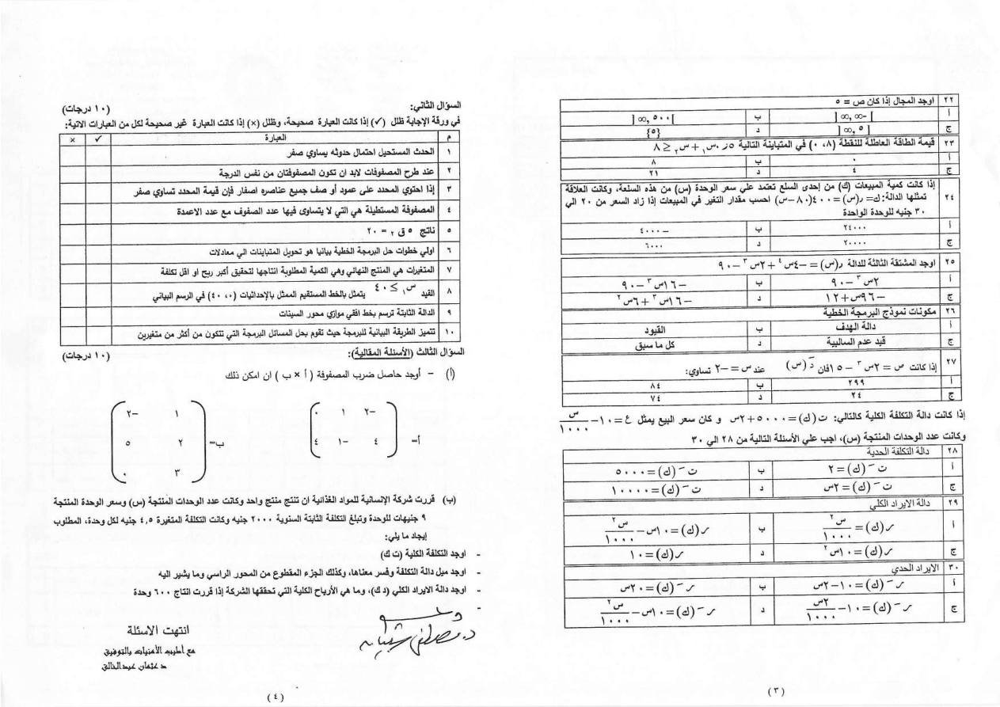
ده امتحان رياضيات الأعمال – نموذج (أ) للمعهد، ساعتين، 50 درجة، د/ عثمان عبد الخالق ود/ مصطفى شعبان. الأدمن قال إن الميدترم شبهه وأسهل.
شكل الأسئلة:
- السؤال الأول (30 درجة): اختيار من متعدد. احتمالات صندوق الكور، نوع المصفوفة، مرافق عنصر، ذات الحدين لمصنع (احتمال الجودة 0.8)، وحل معادلتين بالمحددات.
- السؤال الثاني (10 درجات): صح وخطأ. عبارات زي: «الحدث المستحيل احتماله صفر»، «شرط طرح المصفوفتين نفس الرتبة»، «لو صف أو عمود كله أصفار المحدد = صفر»، «المصفوفة المستطيلة…».
- السؤال الثالث (10 درجات): مقالي. ضرب مصفوفتين.
مهم: فيه أسئلة في الامتحان ده عن المشتقات والتكلفة والبرمجة الخطية، بس قايمة الأدمن للميدترم مش فيها المحتوى ده، فركز على قايمته.
🖼 كل صور الموضوع ده (13) – لو عايز تشوف الدفتر كله
اسحب الصور يمين وشمال، واضغط على أي صورة لتكبيرها والتقليب بينها
قريته من داخل واتساب (6 صفحات). مفيهوش المحددات؛ بيغطي: الاحتمالات – ذات الحدين – المصفوفات. المحددات عندك في القسم 3 و4 فوق ومن رسالة الأدمن.
الاحتمالات: التجربة العشوائية | فضاء العينة (كل النواتج) | النواتج المتساوية الفرص | الحدث المؤكد احتماله 1 والمستحيل 0 | الممكن بين 0 و1 | المستقلة (أحدهما لا يؤثر على الآخر، سحب مع الرد) وغير المستقلة (سحب بدون رد) | المتنافية (لا تحدث معًا) والمشتركة (قد تحدث معًا).
- قانون الاحتمال = عدد مرات حدوث الحدث (م) ÷ عدد الحالات الكلية (ن). | 0 ≤ ح(أ) ≤ 1 | مجموع الاحتمالات = 1 | ح(نجاح) + ح(فشل) = 1.
- الجمع (أو): ح(أ أو ب) = ح(أ) + ح(ب) − ح(أ و ب) (وللمتنافية يُحذف الأخير). مثال: كيس 20 حمراء و40 بيضاء و10 زرقاء (70): ح(حمراء أو بيضاء) = 20/70 + 40/70 = 60/70.
- الضرب (و): مستقلة: ح(أ و ب) = ح(أ)×ح(ب) | غير مستقلة: ح(أ و ب) = ح(أ)×ح(ب/أ) حيث ح(ب/أ) الاحتمال الشرطي.
ذات الحدين (فصل 2 في الدليل): لما يكون لكل محاولة نتيجتان فقط: نجاح (احتماله) وفشل (احتماله) ومجموعهما 1. شكل المفكوك: (ك + ل)^ن. القانون: ح(ر) = ن ق ر × (احتمال النجاح)^ر × (احتمال الفشل)^(ن−ر).
- ⚠ الدليل بيكتب الرموز ك و ل بشكل متناقض في مكانين (مرة ل = نجاح ومرة ك = نجاح). اتبع رموز د/عثمان في الشيت.
- الآلة الحاسبة لحساب ن ق ر: اكتب ن ← Shift ← زر القسمة (÷) (nCr) ← اكتب ر.
- مثال الدليل: رمي حجر نرد 4 مرات، احتمال ظهور 5 (نجاح = 1/6، فشل = 5/6): ح(0) = 0.482 | ح(1) = 0.386 | ح(2) = 0.116 | ح(3) = 0.015 | ح(4) = 0.001. ← مرة واحدة: 0.386 | مرة واحدة على الأقل = 1 − 0.482 = 0.518 | مرتين على الأكثر = 0.482 + 0.386 + 0.116 = 0.984. (راجعت الأرقام وطلعت صح.)
- الاحتمال الفعلي = عدد الوحدات الجيدة ÷ إجمالي المسحوب | النظري = ن ق ر × … بالقانون | بنقارن بينهم لمراقبة جودة الإنتاج (خط الإنتاج سليم ولا فيه خلل).
المصفوفات: تعريف (أعداد مرتبة في صفوف وأعمدة، الرتبة = عدد الصفوف × عدد الأعمدة) | أنواعها: مربعة | مستطيلة | متجه صف | متجه عمود | صفرية | وحدة (1 على القطر) | قطرية (أصفار ما عدا القطر الرئيسي) | متماثلة (تساوي منقولتها) | المنقولة (الصفوف تبقى أعمدة).
- جمع وطرح: نفس الرتبة بس، عنصر مع عنصر. ضرب في ثابت: كل عنصر يتضرب.
- ضرب مصفوفتين: شرط: عدد أعمدة الأولى = عدد صفوف الثانية. صف × عمود.
- المقلوب (المعكوس): شروطه: مربعة و المحدد ≠ 0. أ⁻¹ = (1 ÷ |أ|) × مصفوفة المرافقات المحورة. الخطوات: ① احسب |أ| ② مصفوفة المرافقات (محدد كل عنصر مع تغيير الإشارات) ③ انقلب الصفوف لأعمدة (المحورة) ④ اضرب في (1 ÷ |أ|).
رسايل أدمن قديمة
اضغط لعرضها (5)
- الامتحان ورقي، ومحاضرة الأحد كانت الأخيرة وفيها شكل الامتحان.
- ص82 والخاصية 1 → 8 للمحددات: "هتيجي صح وغلط واختر" (رسالة 3/11). الخاصية الثامنة: إضافة مضاعف صف لصف آخر لا يغيّر المحدد.
- الأدمن: "الميدترم مش هتطلع برا الأسئلة (الشيت) اللي اتحلت" (1/11).
- المواضيع: الاحتمالات (حالة جيدة/رديئة، ص24 مثال ② والتوزيع ذو الحدين، المحددات، حل المعادلات بالمحددات، المصفوفات.
- شيت الأحد: حل مثال 2 ص24 (احتمالات الحالة الجيدة والرديئة).